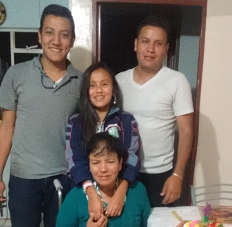
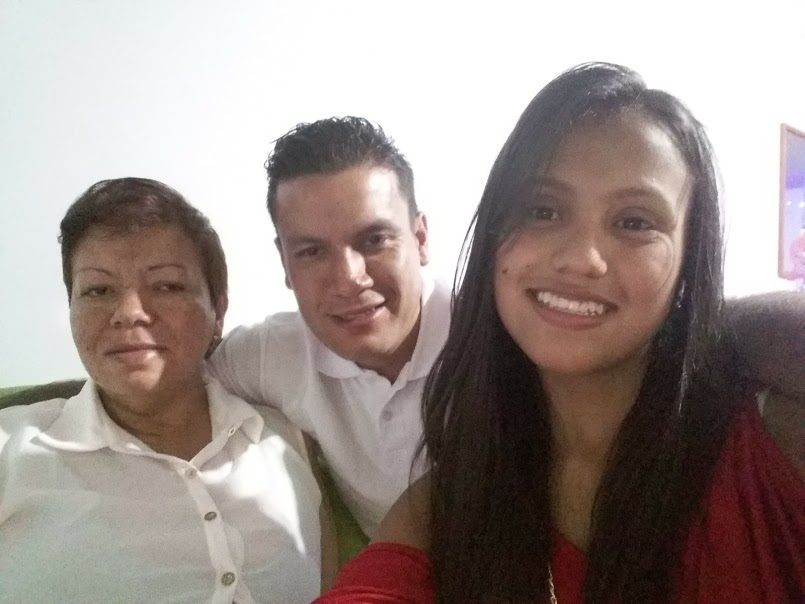
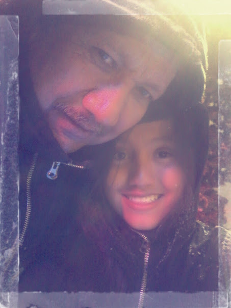
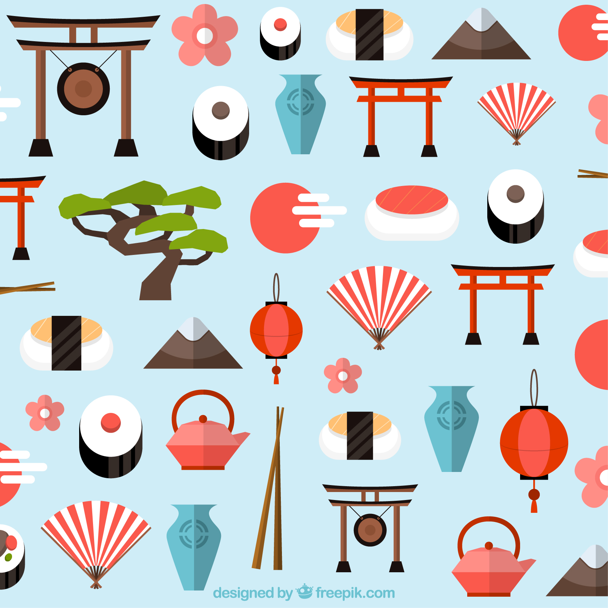
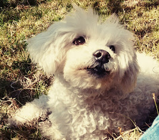
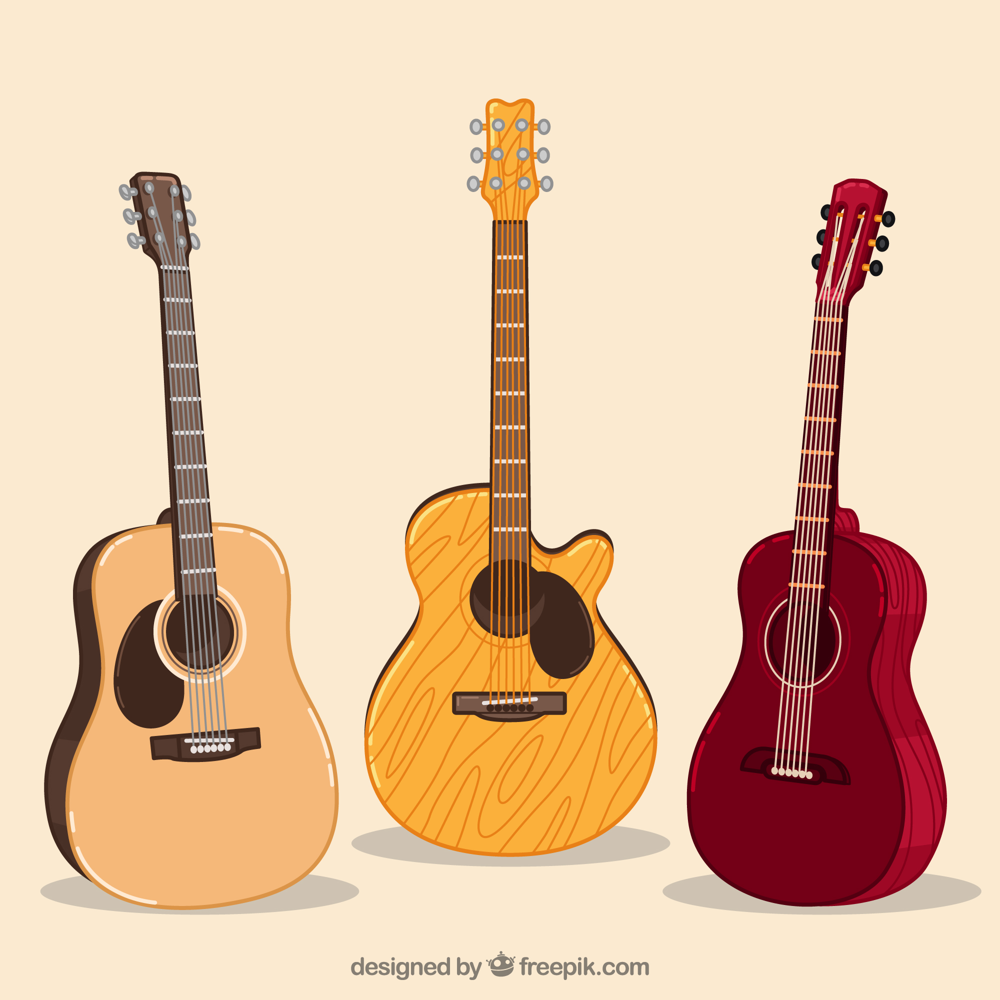

<!--
@license
Copyright (c) 2016 The Polymer Project Authors. All rights reserved.
This code may only be used under the BSD style license found at http://polymer.github.io/LICENSE.txt
The complete set of authors may be found at http://polymer.github.io/AUTHORS.txt
The complete set of contributors may be found at http://polymer.github.io/CONTRIBUTORS.txt
Code distributed by Google as part of the polymer project is also
subject to an additional IP rights grant found at http://polymer.github.io/PATENTS.txt
-->

<link rel="import" href="../bower_components/polymer/polymer-element.html">
<link rel="import" href="../bower_components/paper-card/paper-card.html">
<link rel="import" href="../bower_components/l2t-paper-slider/l2t-paper-slider.html">
<link rel="import" href="shared-styles.html">

<dom-module id="my-julieth">
  <template>
    <style include="shared-styles">
      :host {
        display: block;

        padding: 10px;
      }
      @media(min-width: 1000px) {
      paper-card{

        --paper-card-header-image:{
          height: 500px;
        };
      }

      }
      l2t-paper-slider {
        --paper-slide-height: 400px;
        --paper-slide-dot-styles:{
          --paper-slide-dot-selected: #154360 ;
          --paper-slide-dot:  #5dade2 ;
        };
      }
      @media(max-width: 600px) {
        img{
          width:200px;
        }
        img.smallscreen{
          width:350px;
        }
      }

      paper-slide {
        line-height: 200px;
        font-size: 64px;
        text-align: center;
        vertical-align: middle;
        color: white;
        background: white;
      }
    </style>
    <script src="../bower_components/webcomponentsjs/webcomponents-lite.js"></script>
    <paper-card image="../images/julieth1.jpg">
      <div class="card-content">
        <div class="cafe-header">
          <h1>¿Quien soy?</h1>
        </div>
        <p class="cafe-light">Hola, soy Julieth Tatiana Riaño mora una de las desarrolladoras de esta pagina tengo 16 años y vivo en Bogotá, Colombia</p>
      </div>

    </paper-card>
    <paper-card >
      <div class="card-content">
        <div class="cafe-header">
          <l2t-paper-slider auto-progress slide-duration="3">
            <paper-slide>  </paper-slide>
            <paper-slide> </paper-slide>
            <paper-slide> </paper-slide>
          </l2t-paper-slider>
          <h1>Mi historia</h1>
        </div>
        <p class="cafe-light">
          Como este blog es de historias de la vida quise compartir la mia también. Crecí en una familia muy unida en ese entonces, con
          dos hermanos mayores, por tanto soy la hija menor en mi familia, desde pequeña siempre he querido mucho a mi familia
          tanto a mis padres como a mis hermanos, pero actualmente mi familia se separó. Todo comenzó cuando tenia 8 años
          el 6 de diciembre del 2010 a mi madre le dio un accidente cerebro vascular en el tallo cerebral y por ende actualmente
          se encuentra en silla de ruedas. Esos años fueron dificiles para mi familia pero gracias a Dios seguimos adelante mi mamá se
          recupero parcialmente aunque actualmente no puede caminar, mi papá nos apoyó durante todo el proceso de la rehabilitación.
          Despues de 5 años, mi papá tomó la desicion de no vivir con nosotros ya que habían muchos problemas familiares
          y aún asi siguió pendiente de mi mamá y sus cuidados medicos. Hoy en dia sigo amando a mi familia apesar de las dificultades que pasamos
          y espero que algún dia mi mamá se recupere del todo.
        </p>
      </div>

    </paper-card>
    <paper-card >
      <div class="card-content">
        <div class="cafe-header">
          <l2t-paper-slider auto-progress slide-duration="3">
            <paper-slide>  </paper-slide>
            <paper-slide> </paper-slide>
            <paper-slide> </paper-slide>
          </l2t-paper-slider>
          <h1>Mis gustos</h1>
        </div>
        <p class="cafe-light"> Desde noveno grado, me ha encantado leer, leo toda clase de libros y mis preferidos son los de ciencia
        ficcion, unos de mis libros favoritos por ejemplo es toda la saga de harry potter y toda la saga de cazadores de sombras. Lastimosamente
        por la universidad no he podido leer mucho pero siempre seguiré leyendo. Otra cosa que me gusta es todo lo relacionado con
        la cultura asiatica, me encanta aprender sobre una cultura tan diferente a la nuestra y como son sus costumbres, por esta razón
        me gusta ver series japonesas, koreanas y chinas las cuales me muestran toda esta cultura tan diferente, uno de mis animes favoritos
        es Noragami.</p>
      </div>

    </paper-card>
    <paper-card >
      <div class="card-content">
        <div class="cafe-header">
          <l2t-paper-slider auto-progress slide-duration="3">
            <paper-slide>  </paper-slide>
            <paper-slide> </paper-slide>
            <paper-slide> </paper-slide>
            <paper-slide> </paper-slide>
          </l2t-paper-slider>
          <h1>Mis metas</h1>
        </div>
        <p class="cafe-light">Cuando conoci la programación supe que ese era mi futuro, siempre he sido buena en programación y sobre todo en la programación web. Por eso
        mis sueños están enfocados en hacer soluciones tecnologicas que puedan ayudar a las personas, me gusta crear ideas y proyectos que tal vez pueda
        desarrollar en el futuro, uno de mis sueños es poder crear una compañia en donde podamos hacer proyectos para un mundo mejor.
        </p>
        <p>Otro de mis sueños siempre ha sido viajar sobre todo a paises lejanos como asia, pero me gustaría conocer muchos lugares y poder hablar varios idiomas</p>
      </div>

    </paper-card>
    <paper-card >
      <div class="card-content">
        <div class="cafe-header">
          <l2t-paper-slider auto-progress slide-duration="3">
            <paper-slide>  </paper-slide>
            <paper-slide> </paper-slide>

          </l2t-paper-slider>
          <h1>Datos interesantes sobre mi</h1>
        </div>
        <div class="cafe-light">
          <ul>
            <li>Solo he tenido una mascota y es un perro que se llama teo</li>
            <li>Me gradue del colegio a los 15 años</li>
            <li>Me encanta estudiar ingeniería de sistemas</li>
            <li>Cuando niña me gustaba dibujar pero no he sido muy buena</li>
            <li>Practique guitarra acustica a los 10 años (esto no duro mucho tiempo)</li>
            <li>No tengo redes sociales solo tengo whatsapp</li>
          </ul>
        </div>
      </div>

    </paper-card>

  </template>

  <script>
    class myJulieth extends Polymer.Element {
      static get is() { return 'my-julieth'; }
    }

    window.customElements.define(myJulieth.is, myJulieth);
  </script>
</dom-module>
